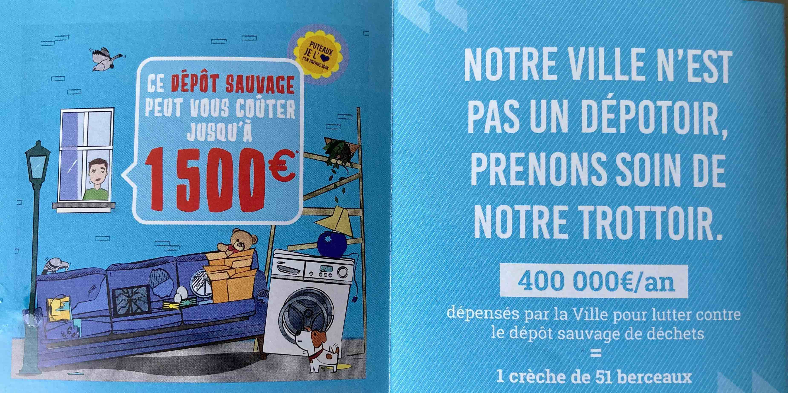
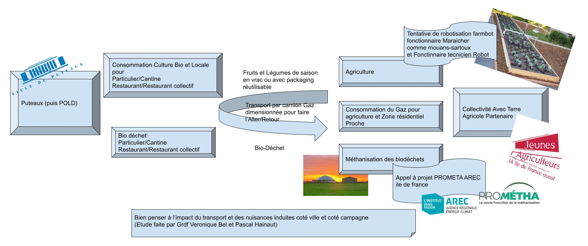
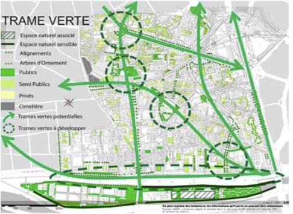
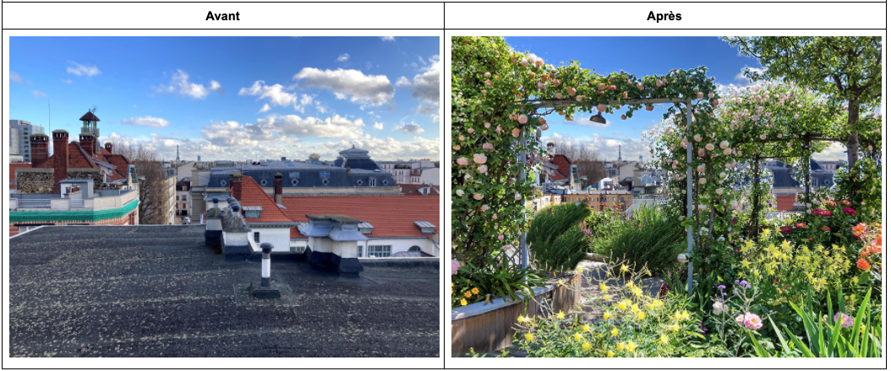

Bonjour,
Comme vous nous le proposez, je souhaiterais dans la mesure du possible être affecté à la commission "aménagement, environnement développement durable, urbanisme, cadre de vie, habitat";
Si un homme de ce collège (pour garder la parité) apprécierait apporter ses idées aux "transports, circulations, sécurité", cela serait parfait.
En effet, j'aurais aimé proposer, confronter, et étudier quelques idées avec la commission:
Gamification des déchets produits:
Créer et communiquer des indicateurs et leurs évolutions sur les déchets générés par la ville, par quartier, par rue, par copropriété. Ainsi inclure les habitants dans une compétition communale.

Renforcement du défi famille énergie positive par challenge dans les copropriétés:
Inciter les conseils syndicaux des copropriétés de moins de 30 logements à lancer une compétition entre habitants avec le coach et le prêt de ecojoko, assitant connecté, fourni par la Mairie.

Résilience par la consommation d'agriculture locale, transport décarbonée dans une économie circulaire:

Expérimentation pour une trame verte aérienne:
Les équipes de Mme le Maire et les putéoliens sont en accord pour que la ville accueille la biodiversité en développant ses espaces verts.
--> dans le programme:
--> dans la majorité des projets de végétalisation/biodiversité proposés au budget participatif:
https://www.budgetparticipatif.puteaux.fr/projets/

